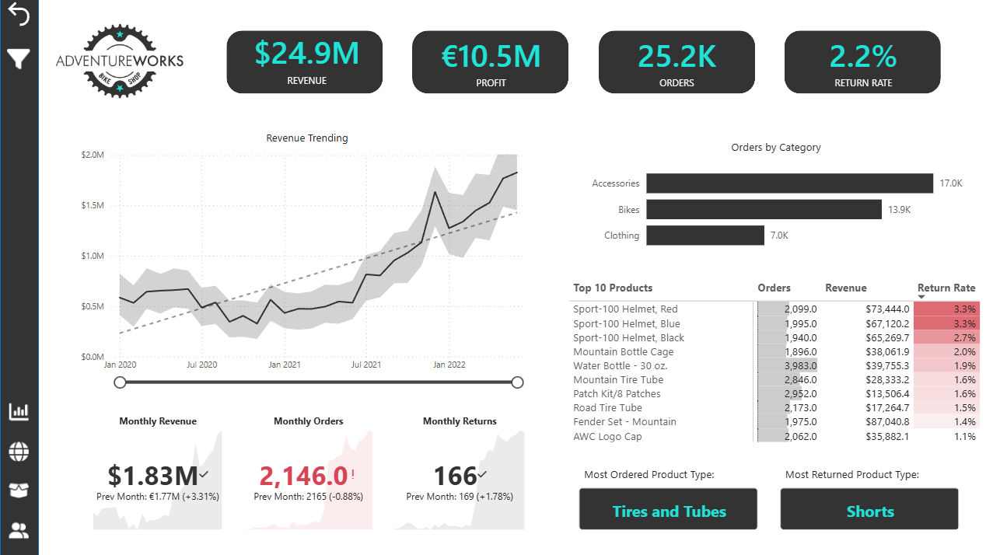
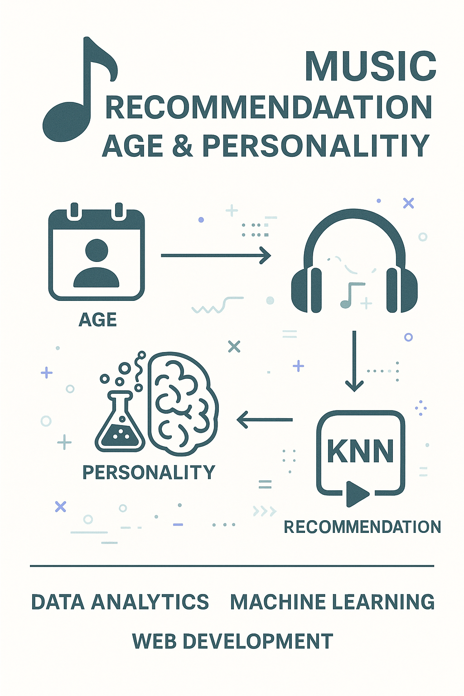
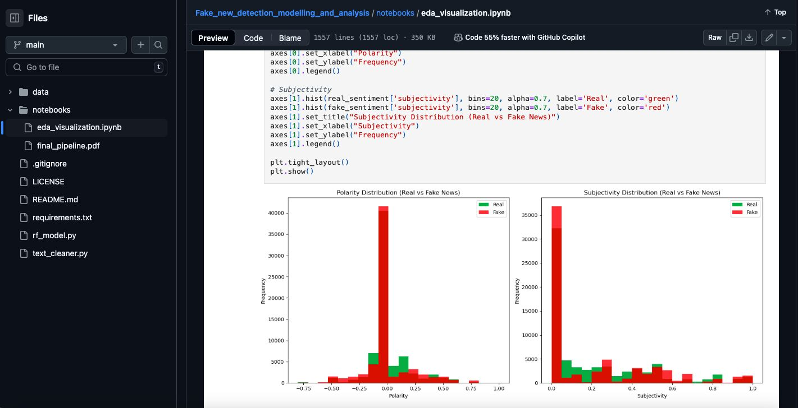

Here are a few projects I have worked on. Each one includes a short summary, what I built, tools used, and links to the full case study.
AdventureWorks performance, returns, customers, and pricing simulator
I built a Power BI report that helps a decision maker track revenue, profit, orders, and returns, then drill into products, regions, and customers. It also includes a pricing simulation to test how price changes may impact profit and targets.
Tools: Power BI, Power Query, DAX, data modelling
Age and personality based music mood prediction
I built models that connect user attributes, personality traits, and listening patterns to predict music mood and improve recommendation relevance.
Tools: Python, Pandas, Scikit learn, Matplotlib
ETL plus NLP pipeline with modelling and insights
Built a full pipeline that combines multiple sources, transforms the data, engineers features, trains a classifier, and visualizes patterns between real and fake news.
Tools: Python, NLTK, PostgreSQL, MongoDB, Git
Kindly contact me with the link below.